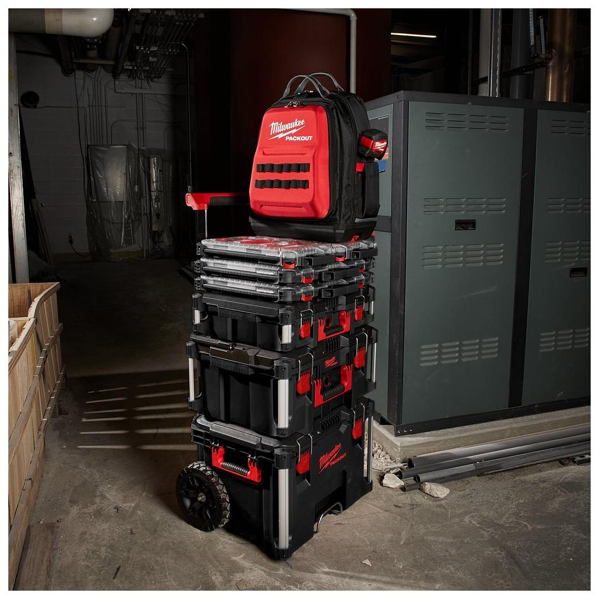
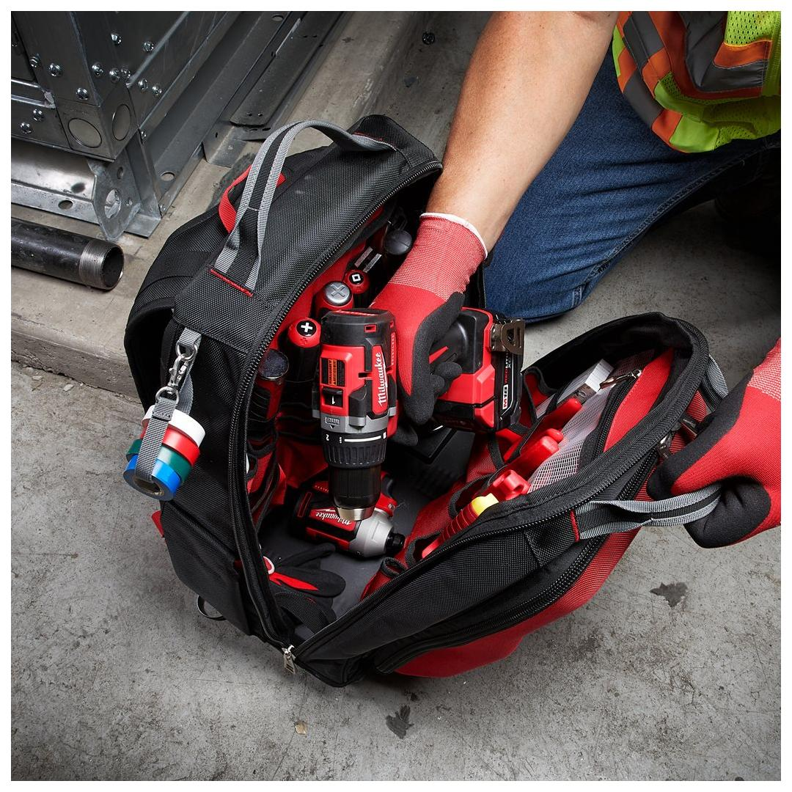
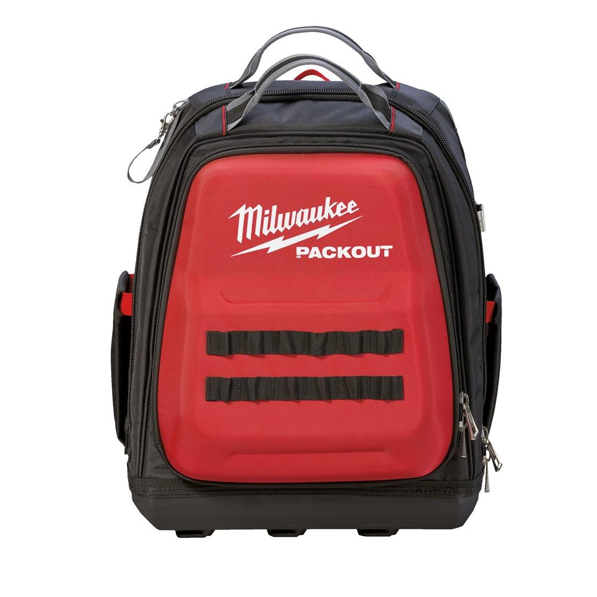
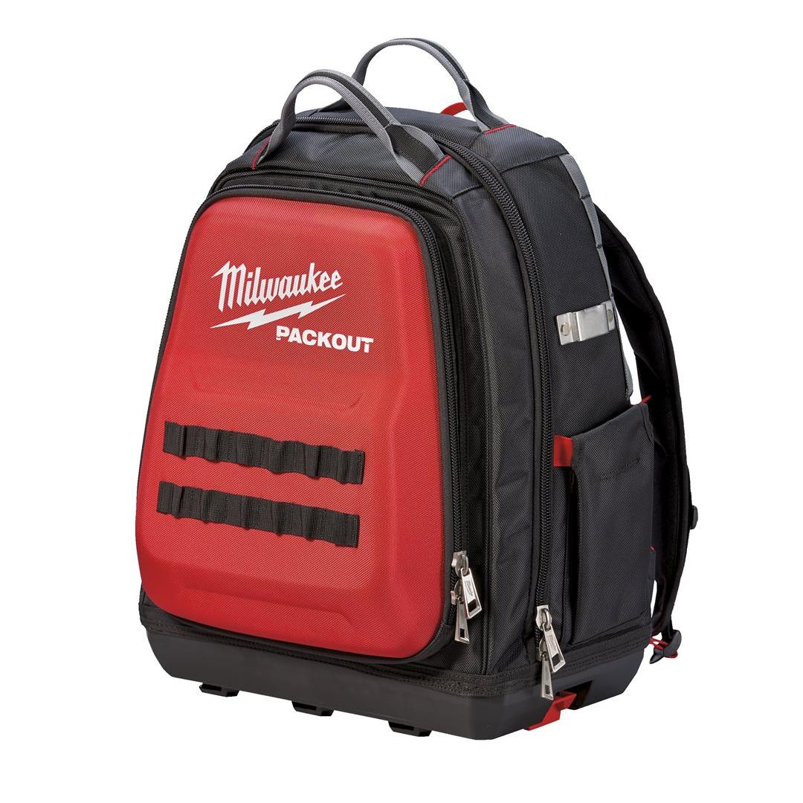
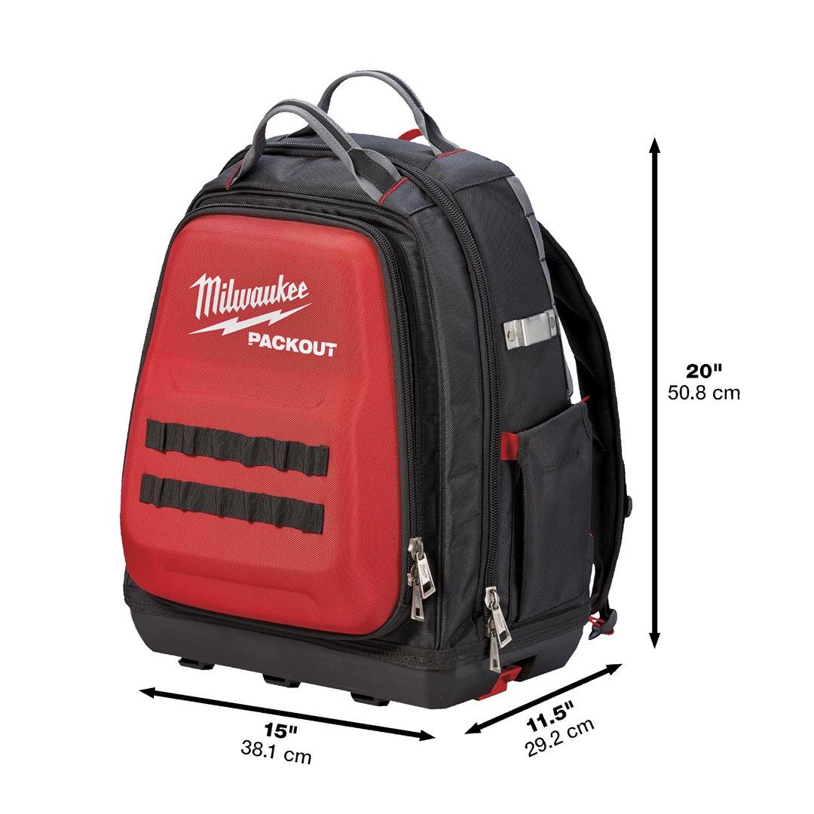
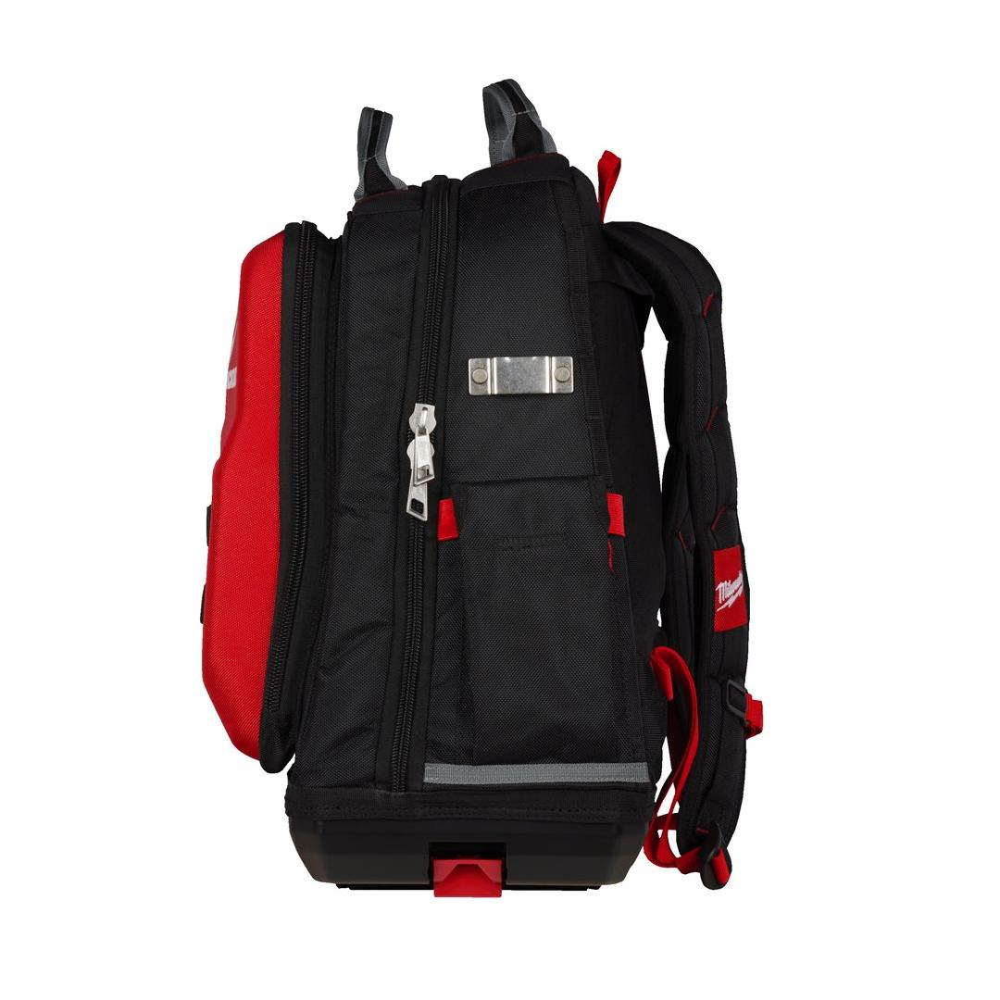

Milwaukee | PACKOUT - SOFT STORAGE - Backpack
4932471131







Features
- Part of the PACKOUT™ modular storage system.
- Made from 1680D ballistic material for jobsite durability.
- 48 total pockets including a hard-shell protected instrument pocket.
- Extra back padding, chest strap, attachment strap for rolling bags and heavy duty harness for ultimate jobsite comfort.
- Impact resistant polymer base protects contents from water and dirt and also allows backpack to stand up.
Information
| Dimensions (mm) | 508 x 381 x 292 |
| No. of pockets | 48 |
| Pack quantity | 1 |